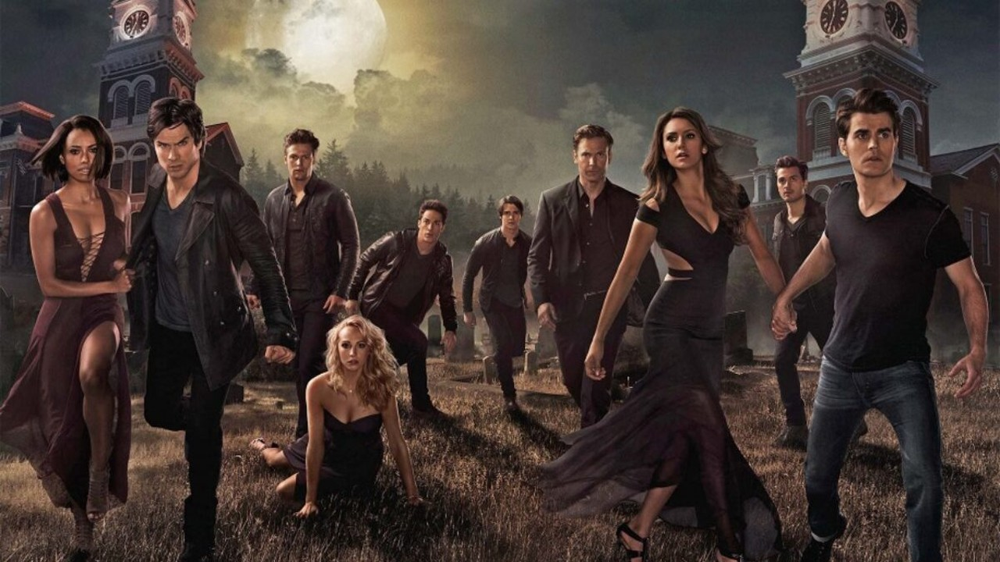

Alguns meses depois que seus pais são mortos em um trágico acidente de carro,
Elena Gilbert e seu irmão Jeremy tentam aplacar sua dor.
Para Elena, que sempre foi popular e envolvida com a escola e amigos, é uma luta esconder sua tristeza do mundo.
Ela se vê atraída por um novo estudante bonitão e misterioso, Stefan, sem saber que o jovem é um vampiro centenário fazendo o melhor para viver em paz entre os humanos.
Seu irmão Damon, porém, é o típico estereótipo de vampiro, incluindo a violência e a brutalidade.
Os irmãos travam uma guerra pelas almas de Elena e de todos na pequena cidade do estado da Virginia.
